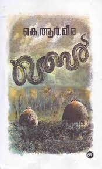
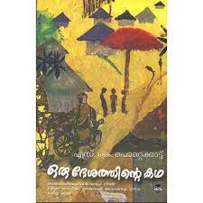
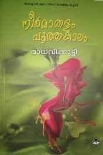
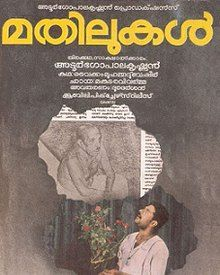
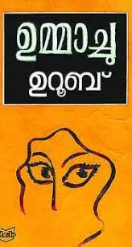

QABAR

K R MEERA
Celebrated Malayalam writer-journalist K.R. Meera's new novella will be published by Eka, an imprint of Westland, this December. Titled 'Qabar', the book is translated into English by Nisha Susan.
According to the publisher, 'Qabar' tells the truths about the intertwined histories of Hindus and Muslims as well as the chasms between men and women.
ORU DESHATHINDE KATHA

S K POTTAKKAD
The story revolves around a boy named Sreedharan who was a resident of the village of Athiranippadam. The story depicts the life of the villagers through the views of Sreedharan also through the other characters. The novel is set in British India
BALYAKALASAKHI

BASHEER
The childhood romance between neighbours blossoms into passionate love during adolescence. Majeed's father was rich once, so could send him to a school in the distant town, although he was not very good at studies. Suhra's father on the other hand had trouble making both ends meet. Even then he wanted to send his daughter
NEERMATHALAM

MADHAVIKKUTY
Kamala Surayya (born Kamala; 31 March 1934–31 May 2009), popularly known by her one-time pen name Madhavikutty and married name Kamala Das, was an Indian poet in English as well as an author in Malayalam from Kerala, India. Her popularity in Kerala is based chiefly on her short stories and autobiography, while her oeuvre (works) in English.
MATHILUKAL

BASHEER
Basheer, who is jailed for writing against the ruling British, befriends his fellow-inmates and a considerate young jailor. One day, Basheer hears a woman's voice from the other side of the wall – the women's prison. Eventually the two jailbirds become lovebirds. They exchange gifts, and their hearts, without meeting each other. Narayani then comes up with a plan for a meeting: they decide to meet at the hospital a few days later.
WINGS OF FIRE

APJ ABDULKALAM
The book begins with the childhood of Kalam's life. In the beginning, he introduces us to his family and tries to familiarize us with his birthplace Rameswaram. In the childhood, he was a great admirer of his father, Jainulabdeen. He was a man of great wisdom and kindness, and Pakshi Lakshmana Sastry, a close friend of his father and the head priest of the Rameswaram Temple. He had an ideal helpmate in his mother, Ashiamma.
AARACHAR
K R MEERA
The story is narrated from the perspective of Chetna Grddha Mullick, daughter of hangman Phanibhushan Grddha Mullick, whose family lives near Nimtala Ghat in Chitpur, Kolkata. Chetna lives with her father, mother, brother (Ramu da), grandmother (Thakuma) father's brother (whom she calls Kaku) and his wife (Kakima). She is twenty two years old, and had been an intelligent student, scoring distinction in her plus two. .
UMMACHU

UROOB
Ummachu is in love with Mayan, her childhood friend. The story revolves around a boy named Sreedharan who was a resident of the village of Athiranippadam. The story depicts the life of the villagers through the views of Sreedharan also through the other characters. The novel is set in British India where the protagonist was born and tells the stories of the people around Sreedharan's entire life.